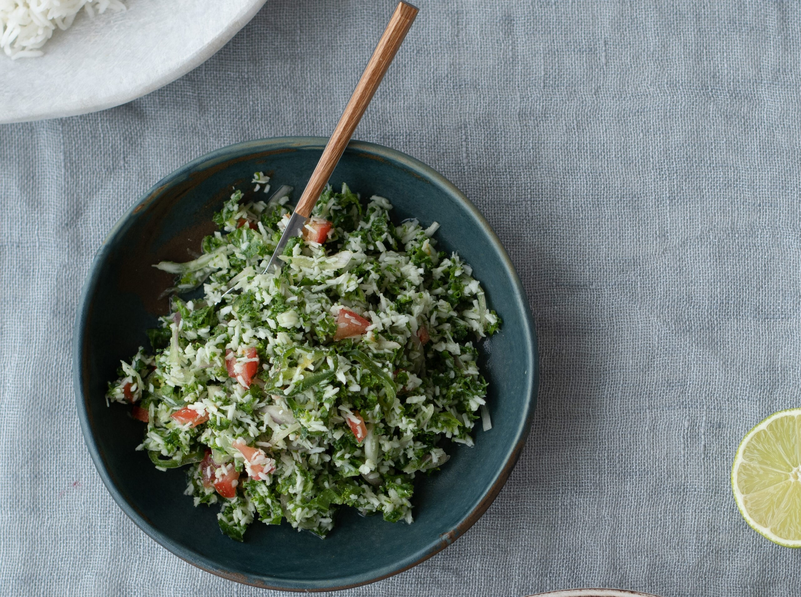

Health Benefits
Brain Health
Gotukola is renowned for improving memory and cognitive function
Circulation
Improves blood circulation and strengthens blood vessels
Detoxification
Helps cleanse the body and remove toxins
Skin Health
Promotes collagen production and wound healing
15 mins
Prep Time
4-6 servings
Servings
No Cooking
Cooking Required
4.8
Rating
Ingredients
- 4 cups fresh gotukola (pennywort) leaves, finely chopped
- 1 cup freshly grated coconut
- 1 small red onion, finely chopped
- 2 green chilies, finely chopped
- 1-2 red chilies, finely chopped (optional)
- 2 cloves garlic, minced
- 1 inch ginger, grated
- 1-2 limes, juiced
- 1 tsp black pepper, freshly ground
- 1/2 tsp salt (or to taste)
- 1/4 tsp turmeric powder
- 1 tbsp coconut oil (optional)
- 2-3 tbsp Maldive fish (umbalakada), crushed (optional)
- Fresh curry leaves for garnish
- 1 tomato, sliced for serving
- 1 lime, cut into wedges for serving
Instructions
- Prepare Gotukola: Thoroughly wash gotukola leaves in cold water. Drain well and pat dry with a clean kitchen towel. Finely chop the leaves and tender stems.
- Combine Ingredients: In a large mixing bowl, combine the chopped gotukola, grated coconut, chopped red onion, green chilies, and red chilies (if using).
- Add Aromatics: Add minced garlic, grated ginger, black pepper, salt, and turmeric powder to the bowl.
- Mix Thoroughly: Using clean hands, mix all ingredients together thoroughly. The natural moisture from the coconut and gotukola will help combine everything.
- Add Lime Juice: Squeeze fresh lime juice over the mixture and mix again. Adjust lime juice according to your taste preference.
- Optional Ingredients: If using, add coconut oil and crushed Maldive fish at this stage. Mix well to incorporate.
- Taste and Adjust: Taste the sambol and adjust seasoning if needed. Add more salt, lime juice, or pepper according to your preference.
- Serve: Transfer to a serving dish. Garnish with fresh curry leaves and serve immediately with sliced tomato and lime wedges on the side.
- Serving Suggestions: Enjoy as a side dish with rice and curry, or as a healthy snack. Traditionally served with string hoppers or roti.
Chef's Tips
Choosing Gotukola
Select fresh, vibrant green gotukola with no yellowing leaves. Younger leaves are more tender and flavorful.
Cutting Technique
Chop gotukola finely using a mezzaluna or sharp knife. This helps release the flavors and makes it easier to eat.
Coconut Freshness
Use freshly grated coconut for the best flavor and texture. If using desiccated coconut, soak in warm water for 10 minutes first.
Serving
Serve immediately after preparation as gotukola can wilt and lose its vibrant color if left too long.
Reviews
Write a Review
Recent Reviews
Dr. Sameera Wijesinghe
2 days ago
As an Ayurvedic practitioner, I highly recommend this recipe! Gotukola is excellent for brain health and circulation. This sambol makes it delicious and easy to incorporate into daily meals.
Lisa Thompson
1 week ago
I was skeptical about eating raw greens like this, but this sambol is incredibly refreshing! The combination of coconut and lime is perfect. I feel so healthy eating this!
Ravi Kumar
2 weeks ago
This takes me back to my childhood in Sri Lanka! My grandmother used to make this exact recipe. The health benefits are incredible, and it tastes amazing with string hoppers.
You Might Also Like